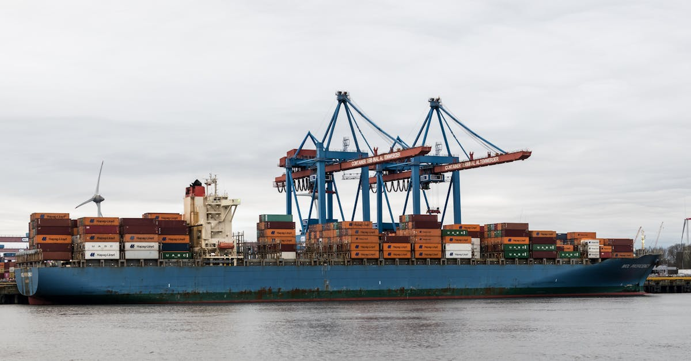

L'onde de choc géopolitique : Quand le Moyen-Orient redessine le commerce mondial
L'escalade des tensions au Moyen-Orient, centrée autour de l'Iran, agit comme un puissant catalyseur de changement pour les flux commerciaux internationaux. Loin d'être une crise régionale isolée, ce conflit, même s'il reste contenu, projette des ondes de choc profondes sur les chaînes d'approvisionnement mondiales. Shahmir Khaliq, responsable des services chez Citi, souligne cette réalité : les entreprises doivent désormais repenser fondamentalement leurs stratégies de production et leur gestion des coûts d'intrants. La simple proximité géographique n'est plus un gage de sécurité ou de stabilité. Les routes maritimes vitales, le transport aérien et même les réseaux terrestres sont soumis à une pression inédite. Les entreprises qui dépendaient de sources d'approvisionnement spécifiques, souvent situées dans des régions devenues instables, se retrouvent face à un dilemme majeur. Faut-il diversifier à tout prix, absorber les coûts supplémentaires, ou tenter de relocaliser une partie de leur production ? La question n'est plus seulement économique, elle est aussi stratégique et, pour certains, existentielle. L'agilité et la résilience deviennent les maîtres mots. Les chaînes d'approvisionnement, autrefois optimisées pour la seule efficacité et le coût minimal, doivent désormais intégrer une couche de gestion des risques géopolitiques. C'est un shift paradigmatique qui exige une vision à long terme et une capacité d'adaptation rapide. Les fluctuations des prix des matières premières, y compris l'or et les métaux précieux, sont une conséquence directe de cette instabilité croissante, rendant la prévision encore plus complexe pour les acteurs du marché.
👉 À lire : Bloomberg Weekend 2026: Décrypter les Marchés, Anticiper l'Or avec l'IA

Perturbations maritimes et aériennes : Les artères du commerce sous tension
Les routes maritimes, véritables artères du commerce mondial, sont particulièrement vulnérables aux tensions géopolitiques au Moyen-Orient. Le détroit d'Ormuz, passage obligé pour une part significative du pétrole et des marchandises transitant par la région, devient un point chaud potentiel. Toute escalade militaire ou même une rhétorique belliqueuse accrue peut entraîner des perturbations majeures, allant de l'augmentation des primes d'assurance maritime à la réorientation complète des routes. Les compagnies maritimes sont contraintes d'évaluer les risques au cas par cas, rallongeant les temps de transit et augmentant les coûts logistiques. De même, le transport aérien, bien que moins directement affecté, subit les conséquences indirectes. Les restrictions d'espace aérien, la hausse des prix du kérosène due à l'instabilité pétrolière, et la nécessité de trouver des alternatives terrestres ou maritimes pour les marchandises d'ordinaire transportées par avion, créent un effet domino. Les entreprises doivent anticiper ces délais supplémentaires et les surcoûts associés. Pour celles qui opèrent dans des secteurs sensibles aux délais, comme la technologie ou les produits pharmaceutiques, l'impact peut être dévastateur. La diversification des hubs logistiques et l'exploration de nouvelles routes, moins exposées, deviennent des priorités absolues. Cette reconfiguration logistique n'est pas sans rappeler l'importance des métaux précieux comme valeur refuge en période d'incertitude, leur disponibilité et leur prix étant moins sujets aux aléas des routes commerciales physiques.
👉 À lire : Hormuz: L'Or, Refuge Ultime Face à la Crise Géopolitique et l'IA
L'impact sur les coûts de production : Entre inflation et recherche d'alternatives
La conséquence la plus immédiate et tangible des perturbations des chaînes d'approvisionnement est l'augmentation des coûts de production. Les entreprises qui dépendent d'un approvisionnement stable en matières premières, en composants ou en produits finis voient leurs factures s'envoler. Plusieurs facteurs expliquent cette inflation rampante :
- Coûts de transport accrus : Les déviations d'itinéraires, les primes d'assurance plus élevées et la demande accrue pour certains modes de transport font grimper les frais logistiques.
- Pénuries de composants : Les interruptions dans la production ou le transport de pièces détachées essentielles peuvent paralyser des lignes de production entières, obligeant à chercher des fournisseurs alternatifs, souvent plus chers.
- Volatilité des prix des matières premières : L'incertitude géopolitique exacerbe la volatilité des marchés des matières premières, y compris les métaux industriels et précieux. L'or, souvent perçu comme un baromètre de l'instabilité mondiale, voit sa valeur fluctuer en fonction des nouvelles du front.
- Coûts de stockage et de gestion des stocks : Face à l'incertitude, les entreprises sont tentées d'augmenter leurs stocks tampons, ce qui engendre des coûts de stockage et de gestion supplémentaires.
Face à cette pression inflationniste, les entreprises sont poussées à explorer plusieurs pistes. La relocalisation ou la régionalisation de certaines productions, bien que coûteuse à court terme, apparaît comme une stratégie de résilience à long terme. La recherche de fournisseurs alternatifs, y compris dans des zones géographiques moins exposées, devient une nécessité. L'optimisation des processus internes et l'investissement dans des technologies permettant de réduire la dépendance aux intrants extérieurs sont également des leviers importants. L'intelligence artificielle, par exemple, peut jouer un rôle clé dans l'optimisation des stocks et la prévision des besoins, même dans un environnement chaotique.
La stratégie des entreprises : De la 'juste-à-temps' à la 'juste-au-cas-où'
La doctrine du 'juste-à-temps' (JAT), qui a longtemps prévalu dans la gestion des chaînes d'approvisionnement, est aujourd'hui remise en question de manière radicale. Optimisée pour minimiser les stocks et maximiser l'efficacité, elle s'est avérée particulièrement vulnérable face aux chocs systémiques, qu'ils soient sanitaires (comme la pandémie de COVID-19) ou géopolitiques (comme la crise au Moyen-Orient). Les entreprises réalisent que la recherche effrénée du coût minimal peut se transformer en une vulnérabilité critique. La nouvelle devise semble être le 'juste-au-cas-où' (JACO). Cela implique une augmentation stratégique des stocks de sécurité pour les composants critiques et les produits finis, afin de pouvoir faire face aux interruptions imprévues. Cette approche, bien que générant des coûts de stockage plus élevés, offre une marge de manœuvre précieuse en période de turbulence. Les entreprises revoient également leurs stratégies de sourcing. Au lieu de se concentrer sur un seul fournisseur, même le moins cher, elles privilégient désormais la diversification géographique et le recours à plusieurs fournisseurs, même si cela implique des coûts unitaires légèrement supérieurs. L'objectif est de réduire la dépendance à une zone géographique unique et de pouvoir basculer rapidement d'un fournisseur à l'autre en cas de problème. Cette transformation des modèles opérationnels nécessite des investissements significatifs en technologie, en planification et en gestion des risques. L'analyse prédictive, alimentée par l'IA, devient un outil indispensable pour anticiper les ruptures et ajuster les stratégies en temps réel, une approche qui trouve un écho particulier dans la gestion dynamique des marchés de l'or et des métaux précieux.
Relocalisation et régionalisation : Un retour aux sources stratégique ?
Face à la fragilité des chaînes d'approvisionnement mondiales, la relocalisation (ramener la production dans le pays d'origine) et la régionalisation (rapprocher la production des marchés de consommation au sein d'une même région géographique) refont surface comme des stratégies attrayantes. Longtemps délaissées au profit de délocalisations vers des pays à bas coûts de main-d'œuvre, ces approches gagnent en légitimité. La guerre en Iran, comme d'autres crises géopolitiques, met en lumière les risques inhérents à une dépendance excessive vis-à-vis de fournisseurs éloignés et potentiellement instables. La relocalisation offre plusieurs avantages potentiels :
- Contrôle accru : Une production plus proche permet un meilleur contrôle de la qualité, des délais et des processus.
- Réduction des risques logistiques : Moins de transport signifie moins d'exposition aux perturbations maritimes, aériennes ou terrestres.
- Flexibilité et réactivité : La proximité facilite les ajustements rapides en réponse aux changements de la demande ou aux problèmes de production.
- Image de marque et RSE : Dans certains marchés, la production locale est valorisée et peut améliorer l'image de l'entreprise.
Cependant, la relocalisation n'est pas une solution miracle. Elle implique souvent des coûts de main-d'œuvre plus élevés, des investissements importants en nouvelles infrastructures et une adaptation des compétences. La régionalisation apparaît souvent comme un compromis plus réaliste, permettant de réduire les distances et les risques tout en conservant certains avantages de coûts. L'Asie du Sud-Est, l'Amérique du Nord ou l'Europe elle-même peuvent devenir des hubs de production régionaux. Cette tendance, bien que complexe à mettre en œuvre, est une réponse directe à l'instabilité croissante des flux mondiaux, une instabilité qui rend l'or et les métaux précieux particulièrement intéressants pour les investisseurs cherchant à se prémunir contre l'inflation et les risques systémiques.
L'or et les métaux précieux : Les valeurs refuges face à l'incertitude
Dans ce contexte de montée des incertitudes géopolitiques et de perturbations des chaînes d'approvisionnement, l'or et les métaux précieux retrouvent leur statut de valeurs refuges traditionnelles. L'instabilité au Moyen-Orient, les tensions commerciales entre grandes puissances, et les craintes d'une inflation persistante poussent les investisseurs à chercher des actifs tangibles et décorrélés des turbulences des marchés financiers traditionnels. L'or, en particulier, bénéficie de cette aversion au risque. Son prix tend à s'apprécier lorsque la confiance dans les monnaies fiduciaires s'érode ou lorsque les perspectives économiques mondiales s'assombrissent. Les perturbations des chaînes d'approvisionnement, en alimentant l'inflation, renforcent également l'attrait de l'or comme protection contre la perte de pouvoir d'achat. Les autres métaux précieux, comme l'argent, le platine et le palladium, bien que parfois plus volatils et soumis à des dynamiques industrielles spécifiques, peuvent également bénéficier de cet environnement. L'argent, par exemple, est à la fois une réserve de valeur et un métal industriel clé, dont la demande peut être affectée par les perturbations de production. Le platine et le palladium sont essentiels dans l'industrie automobile (catalyseurs), et leur approvisionnement peut être sensible aux tensions géopolitiques dans les régions productrices. Pour les investisseurs, cette période complexe souligne l'importance de la diversification du portefeuille. L'intégration stratégique de l'or et des métaux précieux peut aider à mitiger les risques liés aux chocs économiques et géopolitiques. L'utilisation d'outils d'analyse avancée, comme ceux proposés par des agents IA spécialisés dans le trading des métaux précieux, permet de naviguer ces marchés volatils avec une meilleure compréhension des tendances et des opportunités.
Le rôle de la technologie : L'IA au service de la résilience des supply chains
Face à la complexité et à l'incertitude croissantes des chaînes d'approvisionnement mondiales, la technologie, et en particulier l'intelligence artificielle (IA), devient un allié indispensable. Les modèles prédictifs basés sur l'IA peuvent analyser d'énormes volumes de données – données météorologiques, informations géopolitiques, indicateurs économiques, flux de trafic maritime, etc. – pour anticiper les perturbations potentielles bien avant qu'elles ne deviennent critiques. Par exemple, une IA pourrait identifier une augmentation du risque d'incident dans le détroit d'Ormuz en croisant des données de renseignement, des mouvements de flottes militaires et des fluctuations des prix du pétrole, alertant ainsi les entreprises sur la nécessité de sécuriser leurs approvisionnements ou de trouver des routes alternatives. Au-delà de la prédiction, l'IA optimise également la gestion quotidienne des flux :
- Optimisation des stocks : L'IA peut déterminer les niveaux de stock optimaux pour chaque composant, en tenant compte des délais de livraison, de la volatilité des prix et des risques de rupture.
- Planification dynamique des itinéraires : En temps réel, l'IA peut recalculer les meilleurs itinéraires pour les transports, en s'adaptant aux conditions météorologiques, aux fermetures de ports ou aux restrictions d'espace aérien.
- Automatisation des processus : De nombreuses tâches administratives et logistiques répétitives peuvent être automatisées grâce à l'IA, libérant ainsi les équipes humaines pour des tâches à plus forte valeur ajoutée.
- Analyse prédictive de la demande : Mieux anticiper la demande permet d'ajuster la production et les approvisionnements, réduisant ainsi les risques de surstockage ou de rupture.
L'application de l'IA ne se limite pas à la logistique pure. Dans le domaine du trading, notamment pour l'or et les métaux précieux, des agents IA peuvent analyser en continu les marchés, identifier des opportunités et exécuter des transactions 24h/24, offrant ainsi une réactivité inégalée face aux fluctuations rapides dictées par l'actualité géopolitique.
Le dollar américain et l'or : Une relation sous influence géopolitique
La stabilité (ou l'instabilité) du dollar américain et la performance de l'or sont souvent liées, et les tensions géopolitiques au Moyen-Orient ajoutent une couche supplémentaire à cette relation complexe. Historiquement, l'or est considéré comme une alternative au dollar, particulièrement lorsque la confiance dans la monnaie américaine s'affaiblit. Une escalade militaire impliquant des acteurs majeurs ou affectant des routes commerciales cruciales peut susciter des inquiétudes quant à la stabilité économique mondiale, et par extension, à la solidité du dollar. Dans de tels scénarios, les investisseurs ont tendance à se tourner vers l'or, perçu comme une valeur refuge plus sûre et moins sujette aux fluctuations politiques ou monétaires. Les sanctions économiques imposées à l'Iran, par exemple, peuvent avoir des répercussions indirectes sur le commerce mondial et sur la perception du risque associé au dollar. Si les marchés perçoivent que le dollar perd de sa suprématie ou devient moins fiable en raison de ces tensions, la demande pour l'or augmente mécaniquement. Inversement, une résolution pacifique des conflits ou une démonstration de force de la part des États-Unis renforçant la perception de leur puissance économique et militaire pourrait temporairement freiner l'ascension de l'or. Il est crucial de comprendre que cette relation n'est pas linéaire. D'autres facteurs, tels que les politiques monétaires des banques centrales (taux d'intérêt, quantitative easing), l'inflation, et la demande industrielle pour l'or, jouent également un rôle. Cependant, l'élément géopolitique, exacerbé par des événements comme la crise iranienne, agit comme un puissant amplificateur, rendant l'or particulièrement attractif pour ceux qui cherchent à se protéger contre les risques systémiques.
Conclusion : Naviguer dans la nouvelle ère de l'incertitude
La guerre en Iran, bien que circonscrite géographiquement, agit comme un puissant révélateur des vulnérabilités structurelles des chaînes d'approvisionnement mondiales. Les entreprises ne peuvent plus se permettre d'ignorer les risques géopolitiques. La transition d'un modèle axé sur l'efficacité à coût minimal vers un modèle privilégiant la résilience et la flexibilité est désormais inévitable. Cela implique des investissements stratégiques dans la diversification des sources, la régionalisation des productions, et l'adoption massive de technologies comme l'intelligence artificielle pour anticiper et gérer les perturbations. Pour les investisseurs, cette période d'incertitude accrue renforce l'importance de la diversification et de la recherche d'actifs tangibles comme l'or et les métaux précieux. Ces derniers, traditionnellement considérés comme des valeurs refuges, offrent une protection contre l'inflation et les risques systémiques exacerbés par les tensions géopolitiques. L'analyse fine des marchés, combinée à une stratégie d'investissement adaptée, est essentielle. Des outils comme les agents IA spécialisés dans le trading de métaux précieux permettent de naviguer ces marchés complexes avec une efficacité accrue, en opérant 24h/24 pour saisir les opportunités dans un monde en perpétuel changement. La capacité à s'adapter rapidement et à intégrer les nouvelles réalités géopolitiques et technologiques sera la clé du succès dans cette nouvelle ère de l'incertitude mondiale.